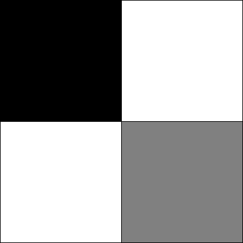

Práctica 1: Introducción a Processing
1 Objetivos de la práctica
Los objetivos de esta práctica son los siguientes:
- Familiarización con el ordenador y los elementos básicos de un sistema operativo.
- Familiarización con el entorno de desarrollo Processing.
- Familiarización con aspectos básicos de programación a través de programas en Processing.
2 Processing
2.1 Introducción
Processing es un lenguaje de programación y un entorno de desarrollo (Integrated Development Environment, IDE).
- Basado en Java
- Producción de proyectos multimedia e interactivos
- Creado por científicos del MIT en 2001
- Distribución gratuita y de código abierto

La propia página de Processing muestra numerosos ejemplos de proyectos realizados con este lenguaje. También hay muchos ejemplos en Youtube, en particular, en el canal de The Coding Train.

2.2 El entorno de desarrollo
El entorno de desarrollo de Processing tiene un diseño minimalista que facilita su uso. La interfaz gráfica posee las siguientes partes:
- Un menú de opciones (archivo, editar, sketch, depuración, herramientas y ayuda).
- Dos botones para ejecutar y detener el programa.
- Un área central para escribir el código fuente (editor).
- Una ventana inferior donde se muestran dos pestañas:
- Consola: Salida estándar del programa.
- Errores: Mensajes de error generados durante la ejecución.
Al ejecutar un programa se abrirá una nueva ventana donde se mostrará el resultado de la ejecución .
Cada ejercicio debe realizarse en un nuevo fichero, no en una nueva pestaña. Se recomienda guarda cada fichero a medida que se avanza en los ejercicios.
3 Dibujando figuras geométricas
Las figuras geométricas se dibujan en una ventana que está formada por una matriz de píxeles. Cada píxel es un pequeño punto de luz que puede tener un color diferente. La combinación de todos los píxeles forma la imagen que vemos en la pantalla.
Por ejemplo, las dos animaciones siguientes muestran la diferencia entre una resolución de pantalla alta y otra baja. En la animación de la derecha, a medida que reducimos la resolución, podemos observar los píxeles individuales que componen la imagen.
Para dibujar cualquier figura geométrica, es necesario especificar una o varias posiciones en la ventana. Dichas posiciones se definen mediante un par de coordenadas (x, y), donde x indica la *posición horizontal e y la posición vertical**. En Processing, el origen de coordenadas (0,0) se encuentra en la esquina superior izquierda de la ventana, como se muestra en la figura de la derecha.
Dibuja una línea que va desde la posición (10, 0) hasta la posición (40, 50).
line(10, 0, 40, 50);Prueba a copiar el siguiente código en el editor de Processing y ejecutarlo:
Line(10, 0, 40, 50);💡 Solución
Processing es sensible al uso de mayúsculas y minúsculas. Por ejemplo, la función para dibujar una línea es line, no Line ni LINE.
Prueba a dibujar varias líneas en diferentes posiciones de la pantalla, utilizando la instrucción line varias veces.
3.1 Lienzo
Las figuras geométricas se dibujan sobre un lienzo de tamaño predeterminado 100x100 píxeles. No obstante, es posible cambiar el tamaño del lienzo utilizando la función size, que recibe dos parámetros: el ancho y el alto del lienzo en píxeles.
Dibuja varias líneas en un lienzo de tamaño 300x200 píxeles.
💡 Solución
size(300, 200);
line(10, 0, 40, 50);
line(100, 50, 200, 150);
line(250, 0, 250, 200);3.2 Tipos de figuras geométricas
Además de la línea utilizada en los ejercicios anteriores, Processing permite dibujar otras figuras geométricas básicas, tales como puntos, triángulos, cuadriláteros, rectángulos y elipses.
¿Puedes deducir qué parámetros son necesarios para dibujar algunas de las figuras geométricas mencionadas anteriormente? Puedes consultar la documentación oficial de Processing, y más concretamente, la sección 2d primitives en el apartado Shape.
💡 Solución
point(x, y): un punto en la posición (x, y).triangle(x1, y1, x2, y2, x3, y3): un triángulo con vértices en las posiciones (x1, y1), (x2, y2) y (x3, y3).quad(x1, y1, x2, y2, x3, y3, x4, y4): un cuadrilátero con vértices en las posiciones (x1, y1), (x2, y2), (x3, y3) y (x4, y4).rect(x, y, anchura, altura): un rectángulo con esquina superior izquierda en la posición (x, y), de anchura y altura especificadas.ellipse(x, y, anchura, altura): una elipse centrada en la posición (x, y), con anchura y altura especificadas.
3.2.1 Dibujando rectángulos y elipses
Tanto en la documentación oficial, como en la solución del ejercicio anterior, os habréis podido dar cuenta de que las funciones rect y ellipse requieren cuatro parámetros: dos para la posición y dos para el tamaño. Sin embargo, hemos asumido que la posición siempre corresponde a la esquina superior izquierda del rectángulo o al centro de la elipse. Esta suposición es correcta por defecto, pero es posible cambiarla utilizando las funciones rectMode y ellipseMode.

Por defecto, Processing interpreta las posiciones de la siguiente manera:
rectMode(CORNER);
ellipseMode(CENTER);También es posible cambiar esta interpretación usando:
rectMode(CENTER);
ellipseMode(CORNER);Intenta dibujar un círculo centrado en (20, 30) con radio 10 utilizando ambos modos. En el siguiente código tienes todas las instrucciones necesarias para completar el ejercicio:
// Modo por defecto
ellipseMode(CENTER);
ellipse( , , , );
// Modo alternativo
ellipseMode(CORNER);
ellipse( , , , );4 Color en Processing
4.1 Escala de grises
Hasta ahora, hemos dibujado figuras geométricas sin especificar ningún color. Por defecto, las figuras se dibujan en negro sobre un fondo blanco.
A continuación, veremos cómo especificar colores en Processing. Por ahora, basta con componer colores en escala de grises. Para ello hay que tener en cuenta que la escala de un tono de gris va de 0 a 255; el valor 0 corresponde al negro y el valor 255 corresponde al blanco. Por ejemplo, la figura de la derecha se ha representado única y exclusivamente con diferentes valores de gris.
En Processing, las figuras tienen borde y relleno, que se definen mediante los métodos stroke y fill. Además, también puede controlarse el color de fondo de la ventana con background.
Por ejemplo, podemos definir el color del fondo, así como del borde y el relleno de un rectángulo de la siguiente manera:
background(0); // fondo
stroke(200); // borde
fill(100); // relleno
rect(50, 50, 100, 100);Además, cabe destacar que Processing funciona como una máquina de estados; es decir, una vez se indica el color de borde o de relleno, este se utilizará para todas las figuras que se dibujen a continuación. Por ejemplo, podemos dibujar dos rectángulos con el mismo color de borde, pero diferente color de relleno, de la siguiente manera:
stroke(0);
fill(150);
rect(20, 20, 50, 50); // borde negro, relleno gris
fill(50);
rect(80, 20, 50, 50); // mismo borde, diferente rellenoDibuja un círculo negro con borde gris, centrado en (20, 30) y con radio 10.
💡 Solución
stroke(128);
fill(0);
ellipse(20, 30, 20, 20);Trata de obtener algo parecido a la figura que se muestra a la derecha.

4.2 Colores RGB (red, green, blue)

Además de diferentes tonos de gris, Processing permite definir colores a partir de los tres colores primarios: rojo, verde y azul (RGB). Cuando los tres componentes toman el valor máximo (255), el color resultante es el blanco. En una escala de grises, los tres valores RGB coinciden; por ejemplo, el color (0, 0, 0) corresponde al negro.
fill(255, 0, 0); // rojo
fill(0, 255, 0); // verde
fill(0, 0, 255); // azul5 Modelo de color HSV
En blanco y negro, los colores se representan mediante valores enteros en el rango [0, 255]:
- 0 corresponde al negro.
- 255 corresponde al blanco.
En Processing, las figuras tienen un borde y un relleno.
stroke(0);
fill(255);
background(255);5.0.1 Ejercicio
Dibuja un círculo negro con borde gris, centrado en (20, 30) y con radio 10.
5.1 Tamaño del lienzo
El tamaño del lienzo se controla con:
size(30, 30);5.1.1 Ejercicio
Crea un lienzo de tamaño 30x30 y repite el ejercicio anterior.
5.2 Color RGB
Los colores RGB se representan mediante tres valores enteros:
fill(255, 0, 0); // rojo
fill(0, 255, 0); // verde
fill(0, 0, 255); // azul5.2.1 Predicción
¿Qué color producen los siguientes valores?
- fill(255, 255, 0)
- fill(0, 255, 255)
- fill(255, 0, 255)
- fill(255, 255, 127)
- fill(127, 255, 255)
- fill(255, 127, 255)5.3 Transparencia
Se puede añadir un cuarto parámetro que representa la transparencia (alfa):
fill(255, 0, 0, 127);5.3.1 Ejercicio
Dibuja dos figuras superpuestas y comprueba el efecto de la transparencia.
6 4. Programas dinámicos
Vamos a dibujar el alienígena Zoog.
6.1 Versión estática
size(800, 800);
ellipseMode(CENTER);
rectMode(CENTER);
stroke(0);
fill(150);
rect(100, 100, 20, 100);
fill(255);
ellipse(100, 70, 60, 60);
fill(0);
ellipse(81, 70, 16, 32);
ellipse(119, 70, 16, 32);
stroke(0);
line(90, 150, 80, 160);
line(110, 150, 120, 160);6.2 Comentarios
Se pueden añadir comentarios usando:
// Comentario de una línea
/*
Comentario de varias líneas
*/6.3 Programas dinámicos: setup y draw
void draw() {
background(255);
ellipseMode(CENTER);
rectMode(CENTER);
stroke(0);
fill(150);
rect(100, 100, 20, 100);
fill(255);
ellipse(100, 70, 60, 60);
fill(0);
ellipse(81, 70, 16, 32);
ellipse(119, 70, 16, 32);
stroke(0);
line(90, 150, 80, 160);
line(110, 150, 120, 160);
}
void setup() {
size(800, 800);
}6.3.1 Ejercicios
- Ejecuta el código y observa la diferencia respecto a la versión estática.
- Usa mouseX y mouseY para mover el cuerpo de Zoog.
- ¿Qué ocurre si background(255) se coloca en setup?
- Haz que todo Zoog siga al ratón.
7 5. Variables, condicionales y bucles
7.1 Variables
int circleX = 100;
int circleY = 100;
void setup() {
size(200, 200);
}
void draw() {
background(255);
stroke(0);
fill(175);
ellipse(circleX, circleY, 50, 50);
circleX = circleX + 1;
}7.2 Condicionales
if (condicion) {
// instrucciones
}
if (condicion1) {
// instrucciones
} else if (condicion2) {
// instrucciones
} else {
// instrucciones
}7.2.1 Ejercicio
Haz que el color de fondo dependa de la posición horizontal del ratón:
- Primer tercio del lienzo: blanco
- Segundo tercio: gris
- Tercer tercio: negro
7.3 Bucles
for (int i = 1; i <= n; i++) {
// instrucciones
}7.3.1 Ejercicios
- Dibuja dos Zoogs en fila separados 100 píxeles.
- Añade un tercer Zoog.
- Ejercicio adicional: añade z pares de brazos a cada Zoog.
Apéndice: Instalación de Processing
- Accede a la página oficial de Processing y selecciona Download.
- Descarga la versión correspondiente a tu sistema operativo.
- Ejecuta el instalador descargado y sigue las instrucciones.